|
第6回 #平暮らしキャラバン すまいるキッズPARK★旧高七小 |
|
| 開催日 | 2025年3月15日(土)
※雨天時は3月20日(土)に順延 ※延期の際は前日15時までに当HPニュース欄にて告知します |
|---|---|
| 開催場所 | 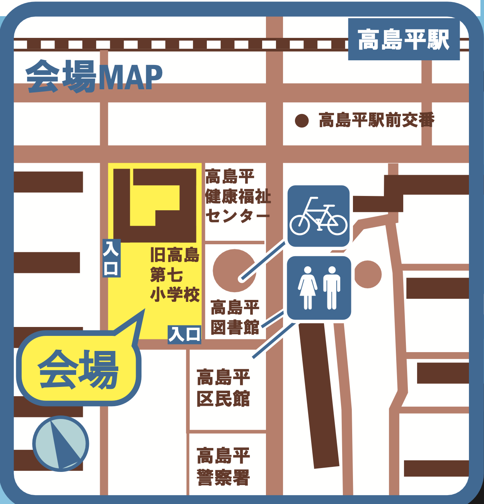 |
| 時 間 | 10:00～15:00（予定）（14:45最終受付） |
| 参加資格 | 保護者同伴の上で無記名アンケートにご協力いただける方 |
| 主 催 | 板橋区・UR都市機構 |
| 企画・運営 | ギャラップ・URリンケージ |
| 駐車場について | なし お車でお越しの場合は周辺の有料駐車場をご利用いただくか、周辺の公共交通機関をご利用いただきますようお願いします。 |
| アクセス | 都営地下鉄三田線「高島平駅」下車 徒歩5分 |
| イベントタイムテーブル | 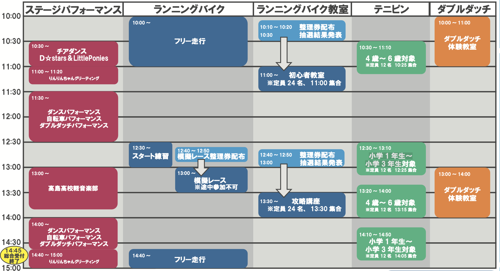 |
■ランニングバイク フリー走行、スタート練習、模擬レース
pets実施時間：10:00 〜 15:00
※初心者教室、ダンス・自転車パフォーマンス、攻略講座の時間帯は走行できません
pets受付方法：当日受付
※模擬レースのみ本部テントで整理券配布(12:40〜12:50)
pets定員：なし
pets対象年齢：2才〜6才(未就学児)
pets参加費：無 料
pets内容：ランニングバイクで本格的なコースを思いっきり走ろう!
レースに参加したことがないお子様大歓迎!
友達みんなで走るととても楽しいよ!
※走行はヘルメット着用が必須です。
※バイク・ヘルメットの無料レンタルがあります。
（レンタル数には限りがございます。混雑時にはお待ちいただく場合がございます。）
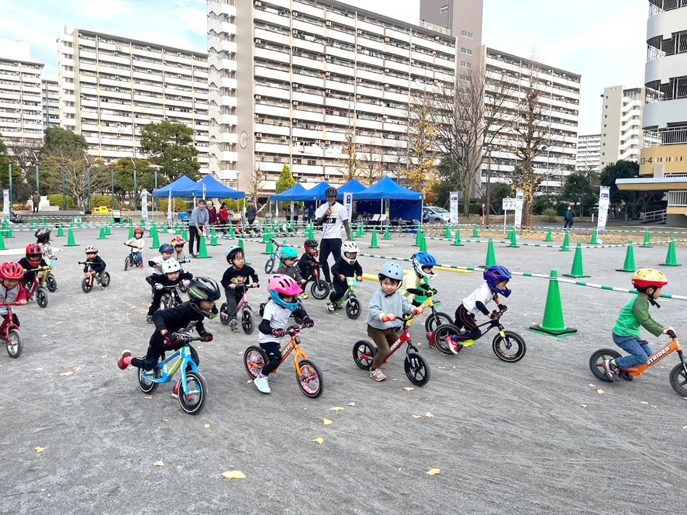
■ランニングバイク初心者教室(初心者限定) ランニングバイク
pets実施時間：11:00 〜 11:30
pets受付方法：当日整理券配布(本部テントで配布)
(10:10〜10:20 整理券配布 10:30抽選結果発表)
pets定員：15名
pets対象年齢：2才〜6才(未就学児)
pets参加費：無 料
pets内容：ランニングバイクに乗ったことがないお子様でも大丈夫!
バイクトライアル世界チャンピオンの有薗選手が楽しく丁寧に教えてくれます!乗り方の基礎がしっかりと学べる教室です!
※走行はヘルメット着用が必須です。
※バイク・ヘルメットの無料レンタルがあります。
（レンタル数には限りがございます。混雑時にはお待ちいただく場合がございます。）

■ランニングバイクレース攻略講座(上級者向け)
pets実施時間：13:30 〜 14:00
pets受付方法：当日整理券配布(本部テントで配布)
(12:40〜12:50 整理券配布 13:00抽選結果発表)
pets定 員：15名
pets対象年齢：2才〜6才(未就学児)
pets参加費：無 料
pets内 容：高島平カップで使用した障害物などを使用して「スタート」や「コーナリング」などのテクニックをバイクトライアル世界チャンピオンの有薗選手がレクチャーします。
この機会にたくさん教えてもらって上達しちゃおう!
※ストライダーのレンタルあり
※レンタル数には限りがございます。混雑時にはお待ちいただく場合がございます
※ヘルメット着用が必須です

■ステージパフォーマンス
★チアダンスチーム「D☆stars＆LittlePonies」
pets実施時間：①10:30～11:00
pets内容：
高島平で活動している【スタジオCheerBell】です。チアダンスパフォーマンスで会場を盛り上げます。
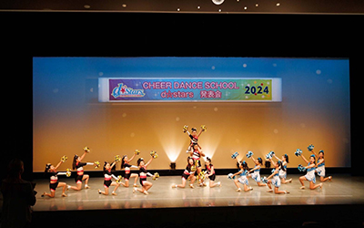
★板橋区りんりんちゃん グリーティング
pets実施時間：①11:00～11:20 ②14:40～15:00
pets内容：
いたばし観光キャラクター「りんりんちゃん」がやってくる！
★ダンスパフォーマンス
pets実施時間：①11:30～12:30 ②14:00～15:00
pets内容：
パリオリンピックの正式種目として話題のブレイキンのパフォーマンス！
プロのダンサーたちが高島平にやってくる！パフォーマンス後半はみんなで踊ってみよう！
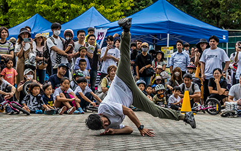
★自転車パフォーマンス
pets実施時間：①11:30～12:30 ②14:00～15:00
pets内容：
バイクトライアル1996年世界チャンピオンの有薗啓剛さんによる迫力満点のバイクパフォー マンス！世界の技を体感しよう！
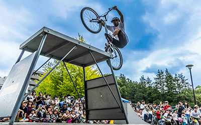
★ダブルダッチ「who's who」
pets実施時間：①11:30～12:30 ②14:00～15:00
pets内容：
日本体育大学ダブルダッチ部内で切磋琢磨したライバルたちが大学卒業とともにチームを結成。メンバー各々が世界大会、国際大会に出場し優勝などの成績を収めてきました。
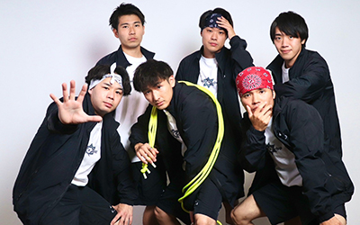
★高島高校軽音楽部
pets実施時間：①13:00～13:45
pets内容：
文化祭などの校内行事や校外イベントに向けて日々活動中です。経験者、未経験者問わず楽しくひたむきに頑張っています！
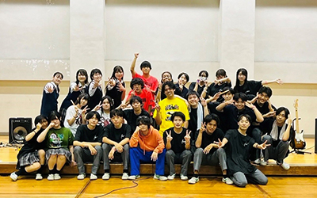
■テニピン
pets対象年齢：4才〜6才対象
pets実施時間：①10:30 〜 11:10 ②13:20 〜 14:00
pets受付方法：当日受付
pets定 員：12名
pets参加費：無 料
pets内 容：手のひらにラケットを着け、柔らかいボールを打ち合うテニピンを体験できます。
※サンダルNG 運動に適した靴でご参加ください。
pets対象年齢：小学1年生～小学3年生対象
pets実施時間：①12:30 〜 13:10 ②14:10 〜 14:50
pets受付方法：当日受付
pets定 員：12名
pets参加費：無 料
pets内 容：手のひらにラケットを着け、柔らかいボールを打ち合うテニピンを体験できます。
※サンダルNG 運動に適した靴でご参加ください。
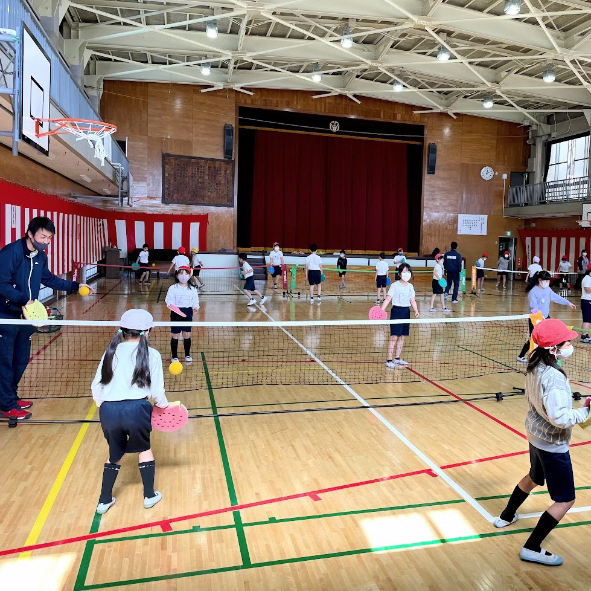
■実施コンテンツ
★ドローン操縦体験
ドローンの操縦にチャレンジしてみよう！
操縦方法も丁寧にお教えしますので、誰でも簡単にご参加いただけます。
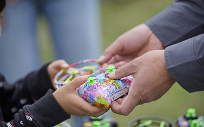
★ワークショップ
高島平ポットラックで大人気のハンドメイドワークショップが体験できます。
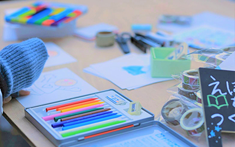
★ｙummybooks
書店員歴28年の店主がセレクトする移動新刊本屋さん。 本との出会いをあなたの街へ届けます。
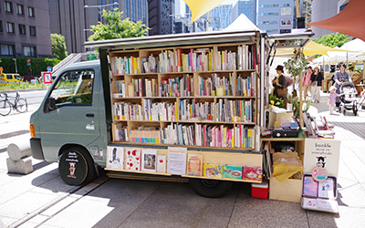
★クルマにお絵かき
お絵かきができるクルマが登場！
クルマをキャンバスにして自由にお絵かきしてみよう！
★電動キックボード安全講習会
安全に走行するためのレクチャーと試乗体験ができます。
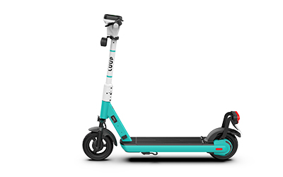
★お菓子プレゼント
受付で保護者の方向けアンケートに答えてくれた方にはお菓子をプレゼント！
※なくなり次第終了
★バルーンアート
高島平団地内の中央商店街から出店！
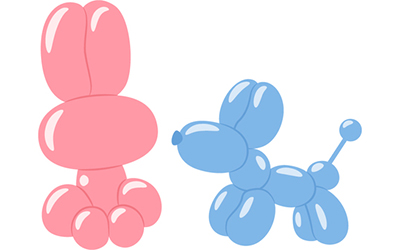
★射的
『子どもたちの未来のため、ママやパパたちが笑顔で働ける環境をつくる』をビジョンに掲げるマム・スマイルグループです。射的の出店でご来場の皆さまをお迎えします。
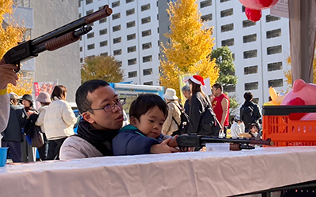
★どこでも駄菓子
みんなを笑顔にする移動式駄菓子屋「どこでもだがし」です！
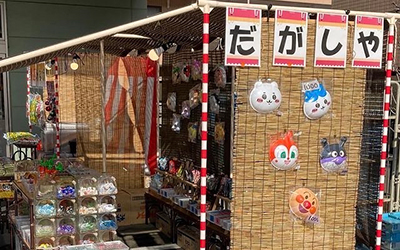
■キッチンカー
キッチンカー５店舗が出店！おいしいもの盛りだくさん！
浅草もんじゃころっけ
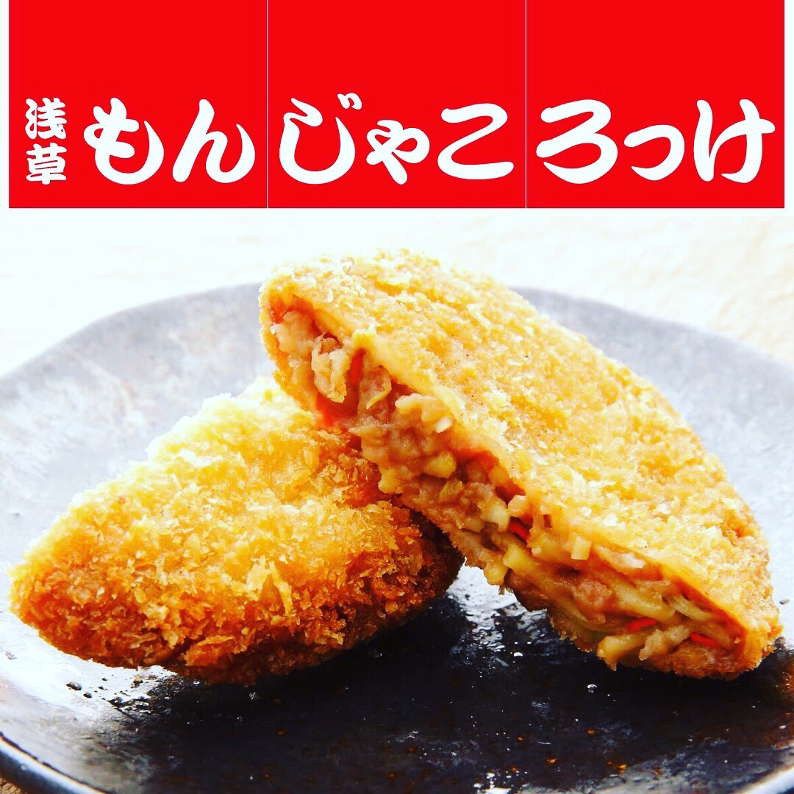
ベアーズハウス
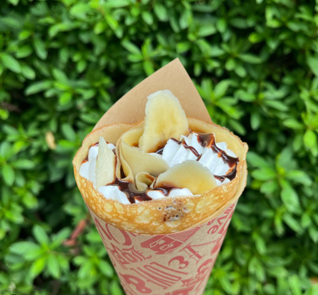
kotomoko＆kotopapa
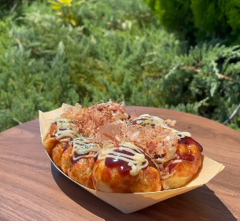
だいちゃん
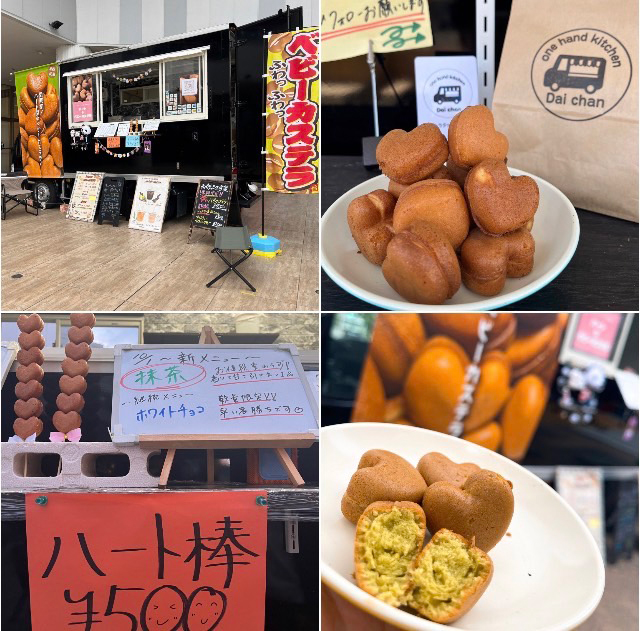
キッチンカーソレイユ
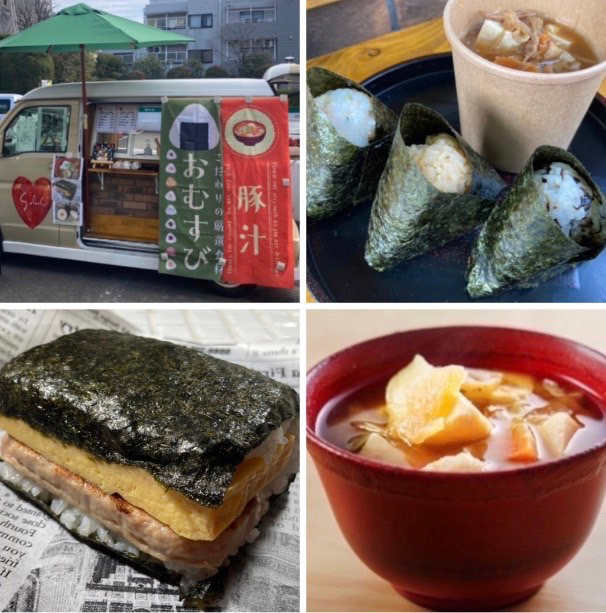
■同時開催
★アーバンデザインスクール【棟下式＠高島第七小第１弾 アーバンデザインスクール】
12時～15時 校内見学会・座談会（入退場自由） 13時～14時 講演 まちを面白がる～思い出の継承「高七小のグランドフィナーレ」とは～ （事前申込制） 講師：唐品知浩 氏 合同会社パッチワークス アイデア係長 ねぶくろシネマ実行委員長 ※雨天の場合も３月１５日に実施します。
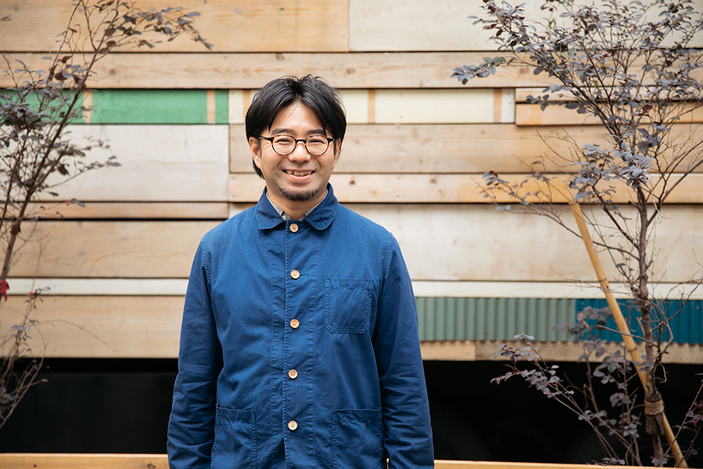
★高島平スタンプラリー
期間：令和7年3/8（土）～3/15（土）
赤塚公園から広がる高島平の魅力発見！！
街を巡って、周って、街を知ろう！発見しよう！楽しもう！
■講師情報
有薗 啓剛（ありぞの けいごう）
京都府出身。バイクトライアル1996年世界チャンピオン、8年連続全日本タイトルを保持。その後、マッスルミュージカル、シルク・ドゥ・ソレイユなどに出演。
全国の幼稚園や保育園での早期二輪車安全指導を実施している。

■講師情報
大野 愛地(おおの あいち)
京都府出身。1分間一度も手を使わず142回転するヘッドスピンの世界記録保持者。
グラミー賞にノミネートされたアメリカのアーティスト“LMFAO”の公式メンバーであり、2016年に米国テレビ芸術科学アカデミー主催の世界各国から大注目を受ける「エミー賞」にて Outstanding Choreography を見事受賞した“Quest Crew”の公式メンバーである。